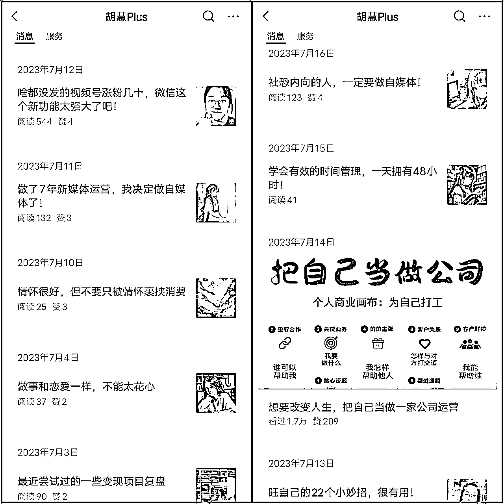
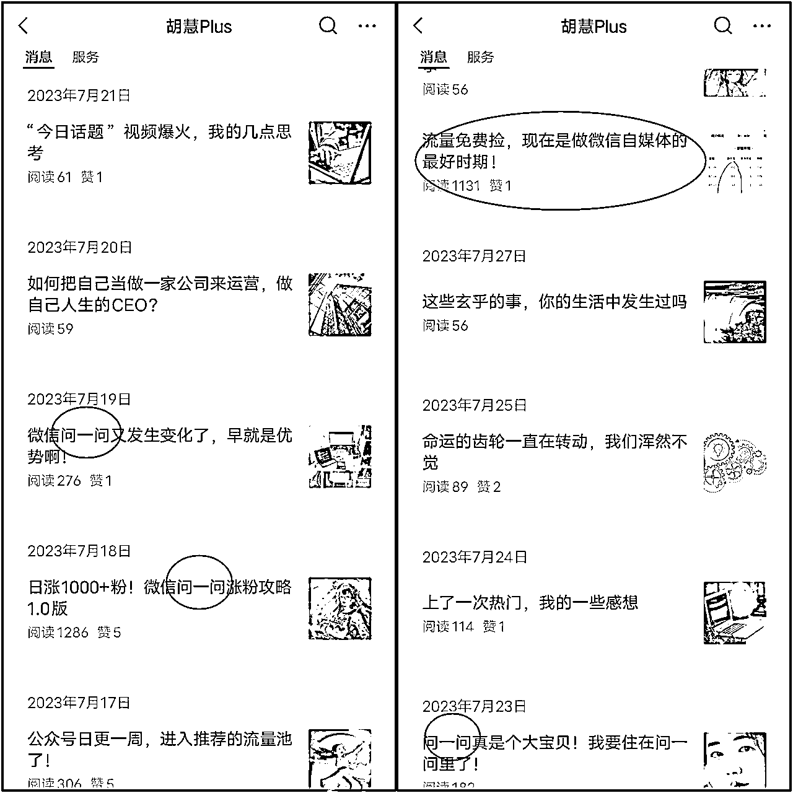
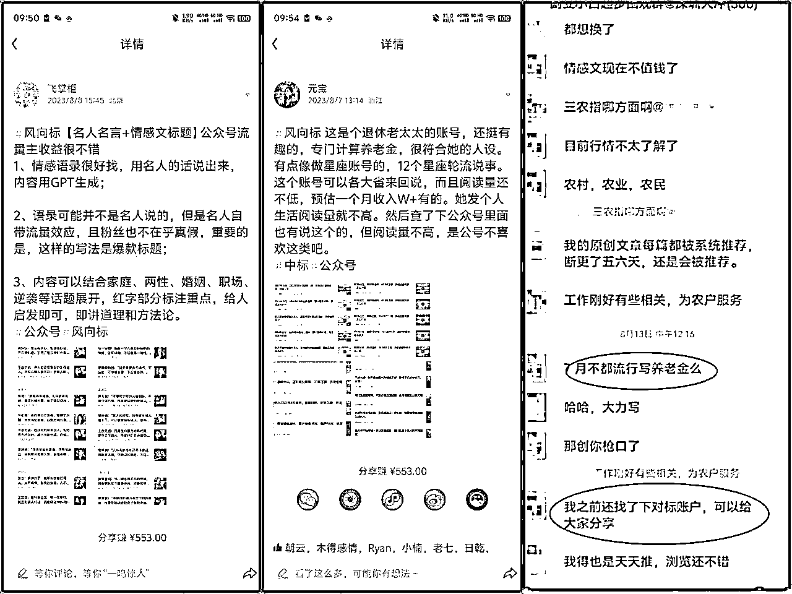
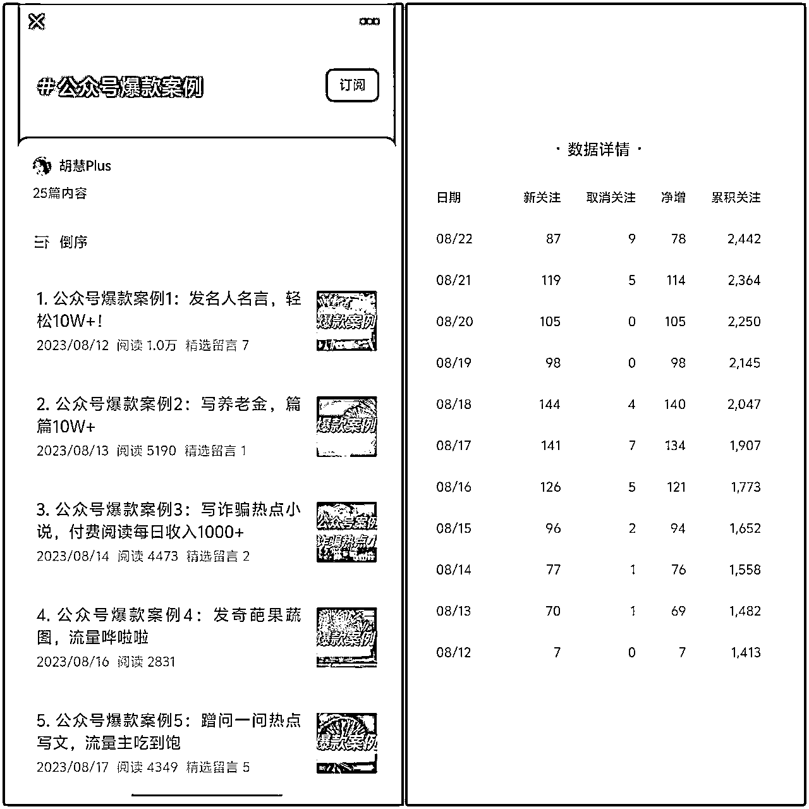
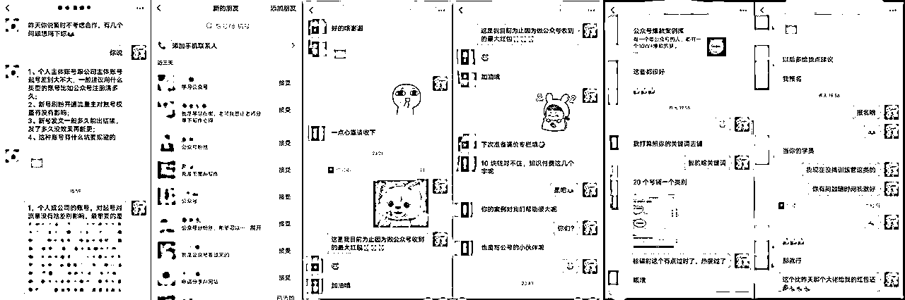
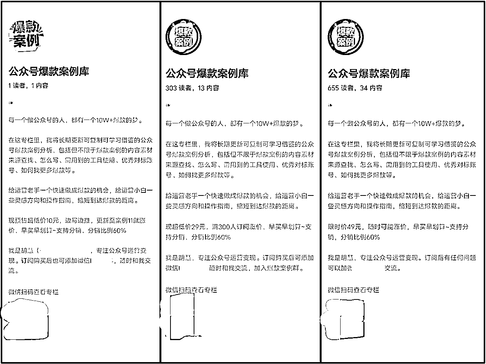
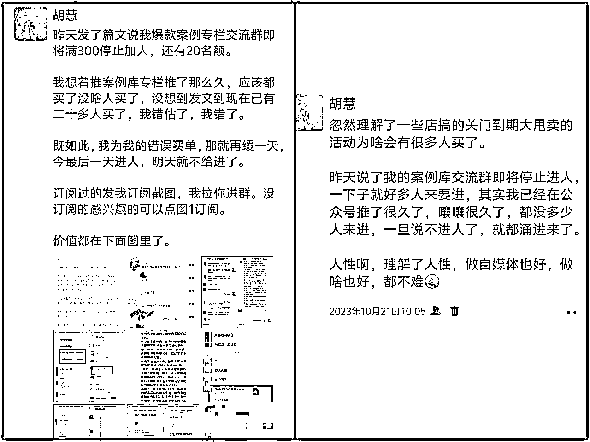
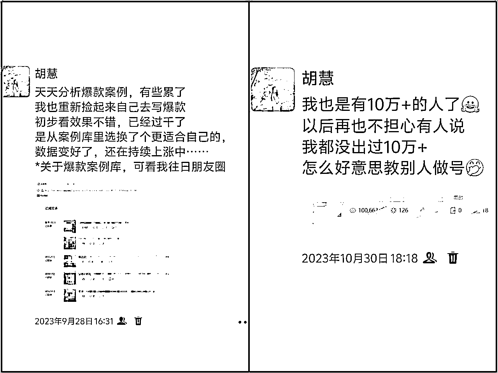
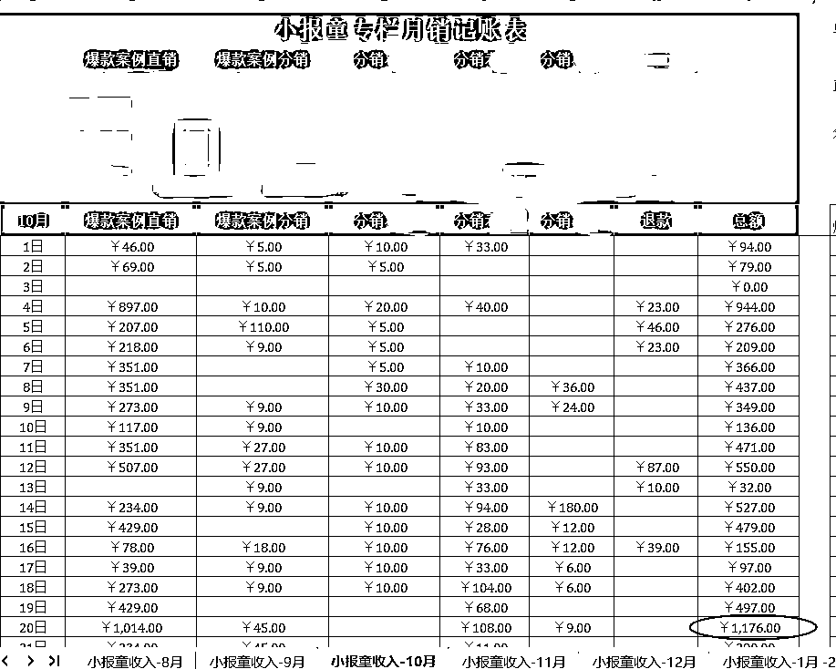

来源：https://xmstzq7itd.feishu.cn/docx/CZ8odN5lvoQTHcxyRioco8jvnSc
生财的小伙伴们好，我是胡慧，曾在职场做过几年新媒体运营（在不同企业负责公司各平台的账号运营：公众号、微博、抖音等）或相关工作。2023年离职后开始全职做自媒体。因为相对比较擅长图文，所以比较专注图文领域变现，当时在各个圈子里看到说公众号有推荐流量公众号爆文大火，很多人都在做爆文且成绩不错。
我于是开始重新捡起我的公众号运营。不过做爆文虽然也出过10万+，但我并没有赚到什么钱，但通过在公众号上写爆文分析、卖爆款案例让我实现了弯道超车，获得了比较持久比较多的流量和变现。
虽然和同样做爆文相关内容赚几百万几千万的大佬们比，我这点成绩微不足道，不过，也是一份小小的“卖铲子”经验，发出来也希望可以启发到更多人。
今天就给大家分享一下，我是如何发现这个商机并一步步成功变现，以及我这一路做的不足之处也分享给大家来避坑，因为这一切主要都发生在我的公众号上，所以，本篇也主要以分享我的公众号的起号与变化过程来展开。
（自2021年加入生财，大部分时间都在潜水刷帖，偶尔发发风向标，第一次发长文经验贴，也算是一次突破一次成长。没有写长文经验贴的经验，写的可能不太好，大家有什么建议和意见都可以给我提提哈，灰常感谢~）
看到爆文很火，本来想写爆文，但是，看了很多爆文资料以及很多很火的爆文领域，都没有我很想写的或者擅长写的，于是，决定先向内出发，写自己想写的，即往个人IP方向走。
于是，我根据自己的喜好（喜欢写一些成长感悟）+自己的经验（有职场新媒体运营相关经验）大致规划了两个方向并行：个人成长+自媒体经验分享。
所以去年7月份那会刚开始做的时候，我主要分享生活、各类感悟、杂知识，以及一些很宽泛的自媒体知识经验。内容不算特垂直：

后来看到微信问一问有点火——各个星球都时不时有人分享这个问一问新鲜事物的动态，于是我也开始关注，并且也随之将我对问一问的了解和收获分享到公众号里。

没想到，才发了几篇问一问有关的，数据都还不错——平常发别的几乎都是平均几十的阅读量，但发问一问竟然有几百过千的。
很明显，“问一问 ”这个事物的特殊性——新鲜热点事物+涨粉价值 很有利于带动流量。
于是，我开始投入更多时间研究，每天回答一些问一问的问题，以及关注和捕捉各个圈子里提及的有关问一问信息，然后再结合自己的收获在公众号更新相关内容。
有一次无意中看到IDO老徐推出了关于问一问的小报童专栏付费产品，我本着学习更多、及时了解更多的心态买了小报童并进了群。
本来我只是打算及时了解到更多问一问的信息利于我更新公众号内容，没想到在群里看到有人分享自己分销成功老徐的问一问小报童，还时不时有人报喜，于是，我也动心了，决定试着分销去卖一下看看。
接连发了几篇关于问一问的文章，并且将小报童的海报放入文章末尾后，没想到真有人订阅购买。
我没有想到，我做公众号这么快（差不多是连续更新了一个多月后的8月中下旬的样子）就有了变现。。
于是我决定将公众号的方向进行垂直细分调整：
放弃了写个人成长感悟的内容，专注分享公众号有关的内容。毕竟，发这块领域相关的内容数据要比发自己的乱七八糟的成长感悟要好，且变现比较容易。和公众号相关的产品很多，且都可以发出来卖。
经常看到生财的风向标以及很多星球、社群都有聊某个细分领域某些个账号最近很火爆了很多10万+，8月那会就看到有人发某某说等名人名言的，也还有养老金的，

我想着我还有一个小号，就打算用小号去写爆文尝试看看，刚开始尝试的名人名言，发了一阵子，但是没有做起来，阅读量普遍只有两位数，流量主才赚了几块钱，慢慢我就意兴阑珊，逐渐停更了放一边了，
但是，又总是在看一看里刷到很多写名人名言爆10万+的号，我忽然萌生了我将这个爆文领域分析一下然后分享出来的想法，
毕竟：
a:我没做起来可能说明我不太适合这个领域，我分享出来别人看到去做说不定就做起来了呢？
b:我的号也是分享公众号运营相关经验，分享这个刚好也是一个内容素材，也符合我的内容定位。
c:这个也算是蹭行业爆文热点，最近整个圈子关注这个的比较多，说不定有流量呢？
想了那么多，我想去尝试一下，于是我去微信搜了搜，看有没有人写过这类型的内容，数据怎么样，以及怎么写比较好，看能不能学习一下。
结果我在微信里搜了很多关键词，都没搜到我想要的，或者要么搜出来的都是抖音或者小红书的案例分析。没有看到有人分享公众号的玩法案例。
我隐约觉察到这或许会是一个小蓝海，小的机会。
我决定我写的试试看，成了的话就成了第一个吃螃蟹的人。没想到我真的成了第一个吃螃蟹的人。
8月12号晚上立马就写了第一篇，关于名人名言的，发出去后数据还不错，一天就有好几百阅读了，
于是第二天我立马又发了关于养老金的案例，前面名人名言那篇的阅读数据也一直在上涨中（没过几天就上千阅读了，且一直在涨），粉丝也在猛涨。之前粉丝都是个位数上涨，写案例系列后常常有三位数涨。
于是，我赶紧搜集更多案例发。除了在各个星球看，自己也在微信的推荐里不停地刷不停地看，以及自己灵光一闪忽然想到某个领域后也会去搜关键词找，看有没有人写。
大部分案例数据都还不错，比我以往的文数据都高，且把我账号的整体数据都带起来了，其他文章数据都跟着带动了。以及粉丝每天也都在几十或上百的涨。

▲可以看到，10天就涨了1000粉
每天也有不少人来加我微信，向我咨询做账号的问题，还有不少人给我发红包感谢。

当然，任何事情不全然只有好的一面。文章爆了也是。
后面不断看到不少人在公众号里抄袭或模仿我写爆款案例，还有人写文章骂我说我骗人说我水平烂说我写的案例实操不了（毕竟我只是简单分析分享没有写很详细做法）。也有一些被我写到的号主来我文章留言或后台私信让我删了或者骂我（因为我暴露了别人账号）......
于是，我除了一开始的几篇因为没有考虑到这些问题而露了账号名，后面的案例我都马赛克挡住了账号名或部分文章标题关键信息。不过这样就导致很多人想知道是什么账号，却没法去找到参考模仿。这个也为我后面做付费的小报童专栏提供了一个小契机之一。
所以，任何好的事情都会有可能引发坏的一面，坏的也有可能促成更好的。关键在于你怎么看，怎么转换。
随着账号数据越来越好，特别是写爆款案例的内容，我也逐渐意识到，我不能仅仅满足于这个表面的数据，要趁此时流量好赶紧变现。因为在公众号上分销卖老徐的问一问小报童效果不错，还曾获得分销榜第一，由此看来，在公众号上卖小报童变现，是行得通的。
所以，我也萌生了自己做一个小报童专栏来变现的想法。
但是小报童做什么方向的内容，我又纠结了很久：
A：做一个公众号运营教程类的小报童。
但是又考虑到，市面上已经有很多公众号运营教程的课，我再做这类产品也许没有啥竞争力，没有稀缺性，
B：将我公众号的爆款案例的文章内容进行更详细的扩充发到小报童，做一个爆款案例库的小报童产品。
毕竟每次发完案例，账号打码了就有人想知道账号甚至加我微信来问，我觉察到这也是一个需求，有需求就有变现机会。但是当时公众号上已经发了十来个案例了，此时去做小报童，我又担心没有什么人买，毕竟大家看免费的看了那么多了，忽然变成付费，不知道能否接受。
我也知道，我一直纠结下去，机会可能就流逝了，于是，我决定无论结果如何，我都要尝试一下。万一成了呢？
同样，做之前我先去小报童里搜了搜，看有没有人做过公众号的案例，结果没有。那么，暂时没有竞争。我又搜了别的平台小红书、抖音等的案例，发现有不少还都卖的还挺好，看来市场需求还是有的，我又有了信心。
以及，我自己的账号有这块的流量和需求。
于是，在9月初的时候，我创建了【公众号爆款案例库】的小报童专栏。

（从最初的10块到现在49，从1个人到现在的600多人订阅，90%订阅都是我自己推的，没有找大佬帮忙）
起初定价10元，将公众号里写过的爆款案例进行更详细的阐述，比如怎么做，有哪些工具网站，怎么找素材找对标等等，同时搜集了更多对标账号给与参考且不打码......后面再在公众号上发文分享案例的时候就将这个案例库的小报童海报附在文章末尾，以及有时发别的类型文章，也会随之附上且随带提一下。
就这样，发出去后就陆陆续续有人买了，发现我的担心是多余的。但是，推了一周，也才卖了几十份，我开始发朋友圈去推，也转化了一些。总体来说卖的比较慢。
直到时不时有人买了小报童后加我问我有没有小报童的群，我才发现，大家对于群的需求好像更大的（当然，我一开始做小报童的时候也思考过要不要弄一个交流群，毕竟，其他很多小报童都会随之配一个群。但是我个人又觉得，小报童里的内容已经写的很详细了，没必要弄群再交流什么，以及，我个人不喜欢群聊，以及要维护群也觉得麻烦，所以没有弄）
直到不断有人问我才逐渐醒悟，这个需求很大！有了群，或许，对于小报童的转化有帮助，于是，我决定建一个公众号爆款案例库交流群。
果然，当我在公众号里说了有爆款案例的交流群后，购买量瞬间翻翻。接连不断的连续多天一直有人买。很快订阅数突破了200份。我随后也开始了涨价预告，又带来了一波购买。
果然，有时候人不能太过自我，不能太自以为是。要考虑到普遍的需求，及时顺应需求做调整。
按照事情发展的规律，好的事情过后，又会出现不好的。
随着进公众号爆款案例库交流群的人越来越多，开始有人发广告了（虽然早有声明不能发），如果是直接发那种很明显的硬广，我当然不用想太多直接踢掉，也踢走了几个。
但头疼的是发软广的——就是有人会经常在群里热心解答大家问题，分享干货，然后顺带发下自己的账号数据，发自己的素材库产品。提醒他说了他也没用，他还说自己没有发广告。
留着吧，我每天看着烦，不留吧，又担心群友怎么看我，会不会觉得我很小气？（毕竟人家也经常解答问题还分享干货），后面发现我想多了。不久后就有群友私信我，问我是不是和他有合作还是收他钱了，怎么总是让他发自己的东西。也有群友直接问我，怎么没有踢他，怎么能忍受他老夹带私货。
我才意识到，看来，不是我一个人受不了。也是我的容忍，助长了他一次又一次的嚣张气焰，也激发了群友的不满。我不能再容忍下去。于是，我立马将他踢出去。后来，他不断用小号进来，也都被我发现了。
从这里，我也学到了一点，该果决的时候一定要果决，社群运营中，遇到这种发广子的违反原则性问题的，提醒了也不听的，不要考虑太多直接踢，不能心软。
受到这件事的影响，我决定逐渐关闭进群，因为，随着进群人越多类似这样的事情就有可能再发生，我不想再出现这样的事件让我心烦。于是，我公众号和朋友圈发布了消息，当群人数达到300后便不再开放进群。发布这个消息的时候，群人数已经有280了。（后来发现这个决定不太明智）
虽然做这个决定，又一次刺激了部分还没买过爆款案例库小报童的人的购买，但是，也由于我对数量的发展预测把控不到位——很快一下子就达到了人数300，以及公众号文章推送后有的人立马看到了而有些人看到的比较晚，过了几天才看到这个消息，想进群却满了，导致不少人因为不能进群立马退订小报童。
我进入了两难的境地。毕竟我已经发文说人数到达300就不进人了，如果将来一直继续让人进，就像是在骗人，但一下子立马不让进群，又会损失很多小报童订单。
我于是就缓了一天。

但是，当我冷静下来思考一番后，才发现，我停止群进人这个想法一开始就错了，不利于长期发展。
后来，我想了一个方法，就是，我本人继续不拉人，让群内成员拉人进群，我在群内征集群成员的个人介绍后放到我公众号文章里，让大家通过他们感兴趣的群友购买小报童然后进群。这样一来虽然稍微麻烦一点，但给群友了一个曝光的机会，也减少了一些损失。
不过，来发个人介绍参与这个活动的群友也不多，我由此感悟到，其实，没有那么多人很关注你每天发了什么搞了什么。我也就慢慢释然这件事了。
这件事给我的感悟：
1、当流量不错的时候，不要突然停止某个计划，比如停止群进人，就算停止，也要多留一些份额，对自己的流量要有正确的预估判断；
2、不要因为某个不值得的伤害你的人影响情绪，不要因为情绪做出一些断自己财路的行为。
3、不要因为某个人的错误而害怕出现更多类似的错误而放弃自己的正在进行的项目，要迎难而上，不要害怕得罪任何人。
除了这件事，也出现了另一件事——有人抄我的内容做了差不多的小报童。主题一样内容不一样我不在乎，毕竟任何一个东西火了都会有不少模仿的，从一开始推出就看到不少有模仿我做类似的公众号案例库我已经见惯不怪。
但是竟然有人将我公众号文章里写的公开的案例内容原封不动的抄袭搬到小报童去卖，然后小报童的简介封面也不改直接复制我的小报童的简介，然后顺机推他的上千块课程带人做爆文，但其实课程是挂羊头卖狗肉目的是让别人推他的这个小报童拉人头进来买课，还有各种前后承诺交付不一致不负责的操作。
后来我在公众号发文说了这件事，以免得更多人被坑。我发出去后，那个抄袭的人竟然举报了我公众号，说我侵犯他的名誉，我申诉了很多次，也依然没有用，官方最后还是给了我违规，不过官方一开始给我的惩罚是我的文章里遮蔽了他的小报童海报，经过我申诉后，取消了遮蔽变成可见，也算是没有白费，可以让人看到以防被骗。
又让我深深的学到了一课——在公众号上不要随便说别人，不要展露别人的名字。实在要说，用拼音或代号等。
因为我刚开始更新公众号的时候，我并没有想好具体变现模式和产品，只打算边写边摸索，计划先写几个月或几年再说。毕竟我想着我写的不是爆文领域，流量不容易爆，但我完全没有想到，不是爆文领域流量也会来的那么快那么猛。
所以，当在公众号上写爆款案例系列爆了之后，我写了十来篇后才思考去做一个产品（公众号爆款案例库小报童）变现。也算是够墨迹的。
而后来，我又发现，很多大佬做小报童都只是拿它引流，引流到私域后，承接有各种变现的高价产品，比如训练营、各种陪跑营、星球、私教等。
我当时，也不是没有想过，但是，我没有类似训练营交付的经验，以及我自己没有写出过10万+爆文，没有底气去带人。虽然我也发现，有部分带人陪跑的人，也有自己压根也没有写出过爆文的，不过是把别人的数据图说成自己的，把一些别人星球里的爆文资料整理出来做成自己的教程去教人。但是我不想这么做。
也不是没有想过找人合作，自己负责引流，别人负责交付。但是，市面上这类活动五花八门，我也不知道哪个比较靠谱。又或者，我有几个关注比较久的我比较认可的部分大佬的活动训练营，但是价格过高，我也担心我转化不了几个，以及担心别人不愿意和我合作，种种，我放弃了合作这条路。但现在想来，试一下又何尝不可呢？就像当初写案例一样，说不定成功了呢？想太多，只会让机会白白流失。
后来，机会来了，我一边分享爆款案例，一边也在我自己分享的众多爆款案例里找到了一个我自己比较喜欢的爆文领域——生僻字去写，我捡起我之前写名人名言没有写起来的那个号，重新开始写，没想到很快就爆了10万+，流量爆了一阵子，这是在9月底到10月份的时候，是我的大号流量依然很爆的时候。我终于可以有底气了。

但那会，爆款案例层出不穷，我忙着写公众号去分享去卖我的爆款案例库小报童卖的很好，对于那时的我来说，发篇文章，就能转化几百上千块的订单，可比带人教人要舒服多了，我也就懒得去往这方面做变现，所以就没有立马把自己做生僻字的经验总结进行转化带人变现，即带更多人去复制我的经验去做这个领域。
直到2024年4月，我又一次升级了生僻字的内容后发现数据不错，又爆了，我才开始整理我做生僻字爆文的经验，去尝试做了一个生僻字的爆文活动，不过，这个时候已经过去半年多了，很多人也都早已被其他爆文产品转化过了，转化量大不如去年那会了，只招收了二十多人参加，以及生僻字这个领域的整体流量也大不如去年了，只有几个人带出了成绩，算是做晚了。到六七月还有人才看到我的生僻字爆文活动要参加，我都拒绝了。
当然，虽然第6条里说了一些遗憾，有些大变现我没有抓住，但是，我也抓住了别的小变现。
除了一开始分销卖老徐的问一问小报童以及我自己的公众号爆款案例库的小报童，我也卖了很多别的产品。
其中，分销别人的小报童是比较多的。比如关于写作的、AI的、公众号运营的等等。有些还获得了小报童分销榜的前几名，因此还获得一些大佬的星球或社群的嘉宾邀请，进而也给我也引流了一些用户和转化。这也算是另一种收获。

（我将小报童收入做了一个表每月记录，10月份变现最多，最高的一天有1000多，当月差不多变现5位数）
在自己没有足够的勇气和能力去做更大的交付产品时，去卖别人的产品，也是一种出路。
以及后面我又做了两个付费群：我的年度陪伴群，老七邀请我和李书生一起合作做的公众号卡点群。
前面说了，我没有主动去找别人合作，但是，却有人来找我合作一些小项目。基本上我答应合作的，都有成功转化变现。
所以，对于像我这样不喜欢主动的人来说，自己把账号做起来，大概是最优解了。
账号做起来，你想攀谈的人、你想合作的人、你想交朋友的人，都会来链接你。当你啥也不是啥也没有的时候，你去找比你好的人和资源，别人也不搭理你。
当然，当你账号做的有点声色，有一丢丢影响力的时候，也更要去主动，或主动链接人，或主动在各个人多的地方冒泡。这样可以加速自己的成长。
最后，简要捋一捋我的账号发展脉络：
起号初期选两个自己感兴趣的领域摸索测试
▼
写热点事物迎来流量小高峰且成功变现确定最终方向
▼
写爆款案例迎来账号流量的大高峰
▼
抓紧流量高峰做爆款案例库小报童产品变现
▼
做其他产品变现、探索更多变现发展模式
一些经验碎碎念：
1、多混群混圈获取更多信息差，时刻保持对行业热点信息的敏感度，多观察、去各处搜寻有没有变现的可能，如果有，结合自己的经验去尝试模仿，如果没有，也可以去做第一个吃螃蟹的人，在成本可控的范围下去尝试，大不了失败，也是经验。
2、模仿别人的时候，要结合自己的实际情况来做相应的调整，而不是一味的照搬式的模仿。我当初写爆款案例的时候，看到很多人没有任何创新的模仿照搬，现在再去看，大部分的都消失了。
3、猛然有流量了，要赶紧的用尽所有能用尽的方法将这流量尽最大化的去变现，不要满足一个小产品，要赶紧开发多样化的产品去测试去消化这波流量，因为，你不去消化，等流量慢慢流逝了，或者在别人那里消化了，你就不太容易消化了。
4、做自媒体也好做什么项目也好，都不会一帆风顺，总会出现很多千奇百怪意想不到的事情，不能轻易的气馁或放弃，不要让情绪影响自己，要遇神杀神遇鬼打鬼，想办法去解决一个又一个的难题，才能越走越远。